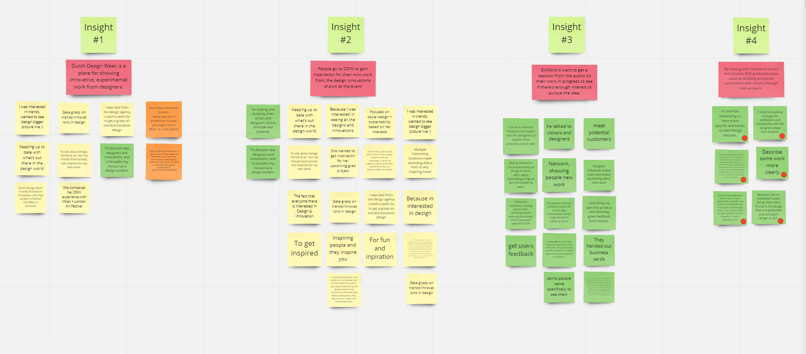
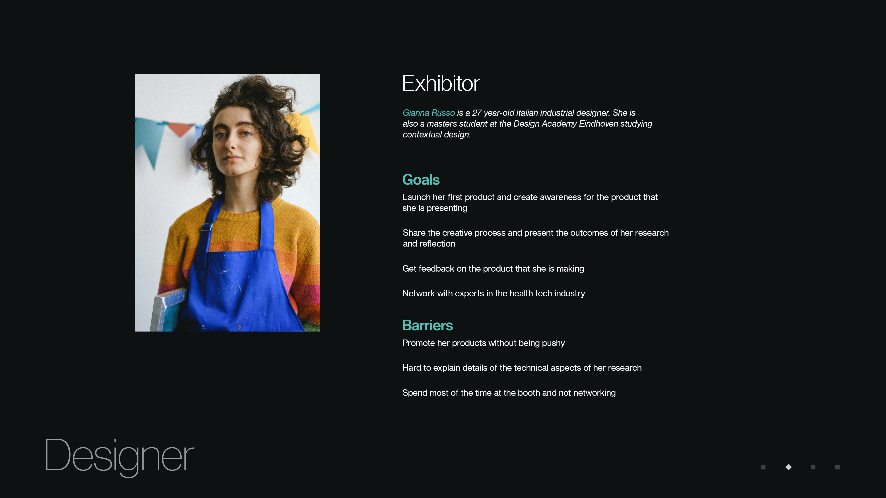
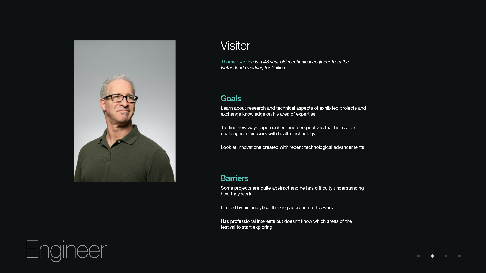

Dutch Design Week (DDW) is an annual design event that takes place in Eindhoven, Netherlands. The festival focuses on showcasing design for possible futures. It is also an opportunity for people in the design industry to meet new talent and engage with their projects and ideas.
Role
UX Research, UI Design, Interaction Design
Tools
Adobe XD, Photoshop, InDesign, Surveys, User Interviews, Affinity Diagramming
Team
Virginia Chu, Nicole Tam, Emma Tynan
Primary Research — Surveys and User Interviews
Our initial research question was to understand how past attendees experienced DDW in the past as well as their goals for attending the event. Most of these questions were qualitative in nature as there were many different events and exhibits at the festival so we wanted to capture the different experiences that people had during their time there. We were also able to connect with five previous presenters at the event for an interview about their experiences.
From Research to Insights and Personas
After conducting our primary research and secondary research, affinity diagramming was done to organize the observations and qualitative data. Through these groupings, we created two personas and identified four key insights:
Visitors at Dutch Design Week are fascinated by projects that help reveal future possibilities
Exhibitors want to share their work where they can get direct feedback and reactions from visitors
Creative process is not limited to the design profession. In fact, it is an expected skill in many tech companies in Eindhoven
By engaging with exhibitors’ work at Dutch Design Week, visitors discover new perspectives that challenge their existing knowledge

affinity mapping from initial research

student exhibiter persona

visiting engineer persona
Design Focus
Problem Statement
Professionals can learn about approaching work challenges differently through understanding exhibitors’ creative process and how they can use it at Dutch Design Week.
Final Framing
How might we help professionals learn from an exhibitor’s creative process in order to bring a new perspective to their work?
Solution Proposal
An application that puts users in the designer’s shoes. The app is for professionals that want to learn more about the exhibits at Dutch Design Week. The goal is to give them technical information about an exhibit whilst showing them the thought process behind the decisions made by the creator.
Application Flow
We ideated three key wireflows that were designed to help DDW visitors discover future possibilities, encourage their creativity, and gain new perspectives about topics they are familiar with. These flows were then turned into clickable prototypes.
The first time the user opens the app, after the splash screen, they enter their profession and interests. This initial step will help to suggest exhibits and events for them that they may be interested which helps them find things to do at the event.
Experiment with Exhibit Concepts
The application encourages creativity through experimentation. This is an opportunity to learn about the technical aspect of an exhibit. Learning about the process from an exhibitor’s point of view shoes thinking that differs from the user’s own.
View Saved Exhibits
In addition to the ability to bookmark and saved exhibits that they plan on viewing. Each exhibit has a description page that contains information about the exhibit, the creator and the times that the creator will be present so that visitors can plan their schedule if they want to talk to the creator.
Reflection
This was the first time I had gone through the process of conducting formative UX
research and then using that research to ideate and create a prototype for a solution.
On top of technical skills like research planning, analysis methods, wireframing, and
prototyping, I also learned that I enjoy talking to people and conducting user
interviews. Learning about why people do the things they do and designing an experience
for them around those learnings is something that I want to do my future work.